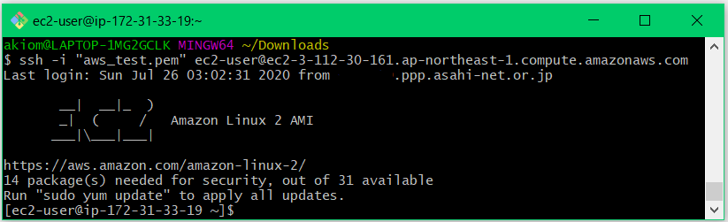

Git Bashを起動して、sshの接続例をペーストして実行するとログインできます。
SSLのキーはDownloadsにセーブされていますので、Git BashでDownloadsのディレクトリに移ってから実行しています。

ログインして、プロンプトが表示されたら、
$ sudo yum update
$ sudo yum install git
$ curl -O https://ftp-trace.ncbi.nlm.nih.gov/sra/sdk/2.10.8/sratoolkit.2.10.8-centos_linux64.tar.gz
$ tar xvfz sratoolkit.2.10.8-centos_linux64.tar.gz
$ mkdir bin
$ mv sratoolkit.2.10.8-centos_linux64/bin/fastq-dump-orig.2.10.8 bin/fastq-dump
$ git clone https://github.com/akiomiyao/ped.git
$ cd ped
$ perl download.pl accession=SRR11513115
$ perl ped.pl target=SRR11513115,ref=SARS-CoV-2,clipping=146
を順に実行します。sra-toolkitやfastq-dumpのバージョン番号は変化するので、
https://trace.ncbi.nlm.nih.gov/Traces/sra/sra.cgi?view=softwareでリンクの位置を確認してください。
AWS LinuxはCentOS系ですので、CentOS Linux 64 bit architectureのファイルをダウンロードします。